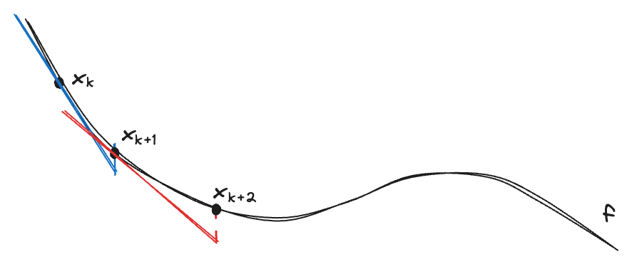
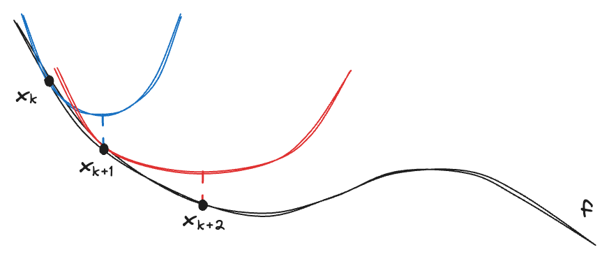
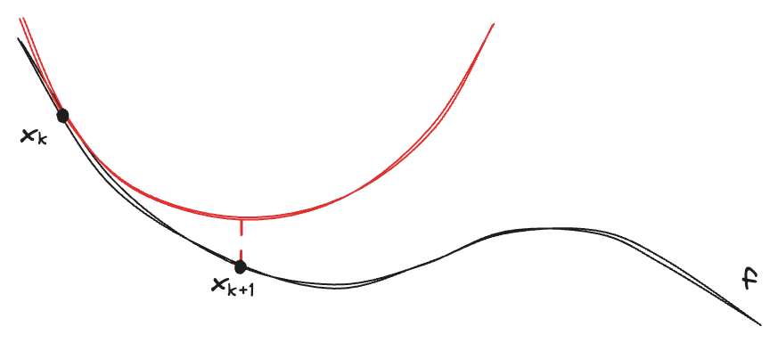

This note gives a brief introduction to Gradient descent and Newton’s method. Both are some of the most well-known techniques for solving non-linear problems. If the problem is linear, one can simply use linear programming techniques such as simplex method. As for non-linear programming, gradient descent and Newton’s method tries to find the linear and quadratic approximation of the non-linear objective function, respectively.
We consider the unconstrained problem with objective \(f:\mathbb{R}^n\to\mathbb{R}\) as follows: $$ \min_{x\in\mathbb{R}^n} f(x). $$
Gradient descent
Suppose that \(f\) is differentiabe, we first write the result of gradient descent: $$ x_{k+1}=x_k-\alpha_k\nabla f(x). $$
Gradient descent is basically everywhere. One can view it as a line search problem where \(-\nabla f(x_k)\) is the searching direction and \(\alpha_k\) is the step length/learning rate. We search along the searching direction by some step length then update the new point.
We only use the gradient (first-order), we say gradient descent is a first-order approximation, i.e., we assume that \(f\) behaves linear around \(x_k\).

Another interpretation
We look at another way to derive this, consider the first-order Taylor approximation with proximal term (regularization): $$ f(x)\approx f(x_k)+\nabla f(x_k)(x-x_k)+\frac{1}{2\alpha_k}\|x-x_k\|^2. $$
We then solve the RHS, which is a quadratic program. By setting the derivative to zero, we get the closed-form solution: $$ \frac{\partial}{\partial x}\Big(f(x_k)+\nabla f(x_k)(x-x_k)+\frac{1}{2\alpha_k}\|x-x_k\|^2\Big)=\nabla f(x_k)+\frac{1}{\alpha_k}(x-x_k)=0,\\[8pt] \implies x^*=x_k-\alpha_k\nabla f(x_k). $$
Note that the proximal term \(\frac{1}{2\alpha_k}\|x-x_k\|^2\)is quadratic, which dominants the first-order linear approximation \(f(x_k)+\nabla f(x_k)(x-x_k)\), which the figure below shows that we are solving a quadratic program (blue & red) each iteration.

Newton’s method
Now suppose that \(f\) is twice differentiable, we again first write the result of Newton’s method: $$ x_{k+1}=x_k-\frac{\nabla f(x_k)}{\nabla^2f(x_k)}, $$ where \(\nabla^2 f(x_k)\) is the Hessian matrix of \(f\) at \(x_k\). This can be obtained by considering the second-order Taylor approximation and setting the derivative to zero: $$ \begin{aligned} \frac{\partial}{\partial x}\Big(f(x_k)+\nabla f(x_k)(x-x_k)+\frac{1}{2}(x-x_k)^\top\nabla^2 f(x_k)(x-x_k)\Big)&=\nabla f(x_k)+\nabla^2 f(x)(x-x_k)=0,\\ \implies x^*&=x_k-\frac{\nabla f(x_k)}{\nabla^2f(x_k)}, \end{aligned} $$
We use both the gradient and Hessian (second-order), we say Newton’s method is a second-order approximation, i.e., we assume that \(f\) behaves quadratically around \(x_k\).

If we recall the other interpretation of gradient descent, it depends on \(\alpha_k\) to get a good quadratic approximation while Newton’s method often has a good quadratic approximation.
High-order method
One may ask (at least for me), what happens if we add a proximal term to the Newton’s method? This is exactly the Cubic regularization of Newton method, where we consider the second-order Taylor approximation with a cubic regularization term: $$ f(x)\approx f(x_k)+\nabla f(x_k)(x-x_k)+\frac{1}{2}(x-x_k)^\top\nabla^2 f(x_k)(x-x_k)+\frac{L}{6}\|x-x_k\|^3. $$
Please refer to Nesterov [1] for more details.
Nesterov is also the one who proposed accelerated gradient descent.
For high-order method, please refer to Jiang [2] for more details.
References
[1] Nesterov, Y., & Polyak, B. T. (2006). Cubic regularization of Newton method and its global performance. Mathematical programming, 108(1), 177-205.
[2] Jiang, B., Wang, H., & Zhang, S. (2019, June). An optimal high-order tensor method for convex optimization. In Conference on Learning Theory (pp. 1799-1801). PMLR.
To be complete
- convergence